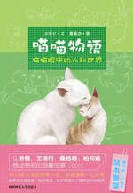
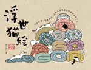
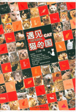
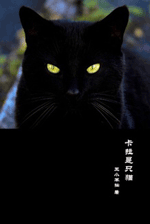

|
《猫》《猫》一书探索人类与猫的关系：公元前2000年前后,古埃及人最早开始了对猫的驯化，在那里，它享有尊贵的地位；在此后的若干世纪里，它都被用于实用的目的：作为啮齿类动物的唯一擒拿手；而后，它逐渐发展为迷人可亲的宠物；到今天，更成为人类的伴侣，重要性和狗不相上下。猫在公元前4世纪左右从古埃及被带入英国，7世纪时到日本，立即受到欢迎。但在西方，它们好则被视为无害的、生活必需的，坏则成为被虐待的方便对象。最终，在17和19世纪的法国，一个贵族小团体开始养猫为宠物。各个阶层的人们开始将猫作为伴侣来欣赏。到目前为止,英伦和美国宠物猫的数量都已超过狗。不过，人类把猫看做伴侣很久以前，就发现了它们的特别之处。猫咪在黑暗中的沟通能力，它们默然的动作，它们的超然——即便是住在我们的家里——以及拒绝服从人的指令，似乎都暗示着奇异的自然力量。起初，这些特性被视为罪恶的，但... |
 |
《喵喵物语》小脏猫“水晶”被丫丫一家收养后，蜕变成华丽的类波斯猫，并且结识了此生唯一的真爱——中华田园猫“绒绒”。从互不相识到相亲相爱，水晶和绒绒的甜蜜故事接连上演。更让人欣喜的是，家族添丁，五只性格各异的小猫让这个家热闹异常。猫有猫的生活，人有人的世界。猫猫眼中的人和世界，带着温情还是冷漠？悠然恬静还是行色匆匆？越了解它们，你会越明白什么叫“宽容”，什么叫“爱”。如果可以像猫一样生活，也许你的世界也会改变…… |
 |
《浮世猫绘》呼嚕呼嚕～好幸福啊～沒有比這更美好的貓咪世界了！ 說完了貓的壞話、讓貓咪大肆購物，再指導貓奴遵循貓咪使用手冊後，這次，輪到貓咪的浮世繪登場了！浮世繪是日本江戶時期興起並廣受大眾歡迎的木刻版畫繪畫形式，展現庶民豐富的生活與活躍的生命力。貓小姐將浮世繪的主角轉換為貓咪，看看他們，正隨著四季更迭自在地生活呢！春天，爽快地用大樹磨爪子和盪鞦韆；夏天，開心地趴在客廳一邊玩蕎麥麵一邊吃；秋天，調皮地在落葉堆裡躲貓貓；冬天，懶懶地和被子一起攤在屋頂上曬太陽，或聚在烤爐前圍爐烤魚，然後，一年又過去啦…… |
 |
《遇见·猫的国》在中国南方的某个城市，有无数只猫生活在那里，它们有名字、职业和家庭。本书作者丁三郎，是一位资深猫奴兼摄影师，在5年时间里，他走访猫的国，用文字记录了众猫最真实的生活状态，用镜头捕捉众猫最萌的瞬间。《遇见•猫的国》，披露了其中60多只猫在猫国的生存状态，由100篇聪明幽默的文字和200多张令人惊艳的图片组成。当你翻开此书，发现它们不是猫，而是和人类一样的有想法的动物。如果说猫是“神的宠物”，三郎就是“神的后花园”的偷窥者。在《遇见•猫的国》，我们看到了一个神奇的猫世界。 |
 |
《卡拉是只猫》这是一部现代寓言。笔者一直认为，在这个星球上，除了人类世界外，其他的生物也拥有着另外的世界。如果说人类为主的世界里生存着动物，那么，也应该同样存在以动物为主的世界，在那里，人类只是作为一类普通的生物存在。无论是在哪里，人类也好，动物也好，都需要家，而现实是，家在哪？房子要么买不起，要么被强拆，死了之后难道就消停了么？不是，在另一个世界里，或许情况依旧是那样。卡拉是一只普通的猫，以一只猫的游历来反映人类与动物世界。这部小说采用的是一种“另类”的文体，它不是童话，也不是传统的寓言，而是现代寓言。但是，儿童可以读，成年人也可以读。猫是一种有灵性的动物，而且性情柔软，以猫为视角，更能进入到读者心里。这部小说用的是一个新鲜的视角，内容新奇，可以给读者换换口味。 |